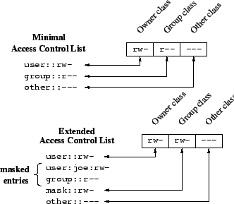

文件权限¶
集群文件权限策略¶
集群的共享存储池（挂载在 /pool 下）做了如下配置：
| 配置 | 效果 |
|---|---|
chmod g+s /pool/* |
设置 SGID，创建的文件会自动继承 owner group |
setfacl -d -m g:zjusct:rwx /pool/* |
zjusct 组的用户默认有所有文件的 rwx 权限 |
通过这两项配置，zjusct 用户组下的用户可以在 /pool 下便捷地协作。
Git¶
运行 git 命令时，git 首先会检查仓库的所有者是否是当前用户。如果不是，则会拒绝执行命令并触发警告。
Example
假设用户 bowling 在共享存储池中创建了 Git 仓库 /pool/nvme/HPC101，那么其他用户即使有 rwx 权限，运行 Git 时也会遇到下面的报错：
出于安全考虑，集群不会在系统层面添加 safe.directory * 这样的配置。请用户自行添加 Git 仓库信任。详见 Git - git-config Documentation
Autofs 与文件权限¶
集群的网络文件系统均通过 Autofs 挂载。Autofs 能够实现按需挂载，当有用户访问相应路径时自动挂载，一段时间后会自动卸载。当路径没有被挂载时，显示的文件权限是一个默认值。下面是一个例子，在 cd hdd 之前，hdd 目录没有被挂载，没有显示真实的文件权限。进入文件夹后目录被挂载，能够获得真实的文件权限。
bowling@storage /pool> getfacl hdd
# file: hdd
# owner: root
# group: root
user::rwx
group::rwx
other::---
bowling@storage /pool> cd hdd
bowling@storage /p/hdd> getfacl .
# file: .
# owner: root
# group: zjusct
# flags: -s-
user::rwx
group::rwx
other::---
default:user::rwx
default:group::rwx
default:group:zjusct:rwx
default:mask::rwx
default:other::---
POSIX 文件权限¶
POSIX 定义了基本的文件权限模型，这是 Unix 和类 Unix 系统中最基本的权限控制机制。每个文件和目录都有三种类型的用户身份和对应的权限设置：
基本权限类型¶
每种文件有三个基本权限位：
r(read) - 读权限w(write) - 写权限x(execute) - 执行权限
这三种权限分别对应三种用户身份：
- Owner (user) - 文件所有者
- Group - 文件所属组
- Other - 其他用户
文件与目录权限的区别¶
对于文件，权限位含义如下：
r- 允许读取文件内容w- 允许修改文件内容x- 允许执行该文件
对于目录，权限位含义有所不同：
r- 允许列出目录中的文件和子目录w- 允许在目录中创建、删除、重命名文件或子目录x- 允许进入该目录（cd 命令）
特殊权限位¶
除了基本的 rwx 权限外，POSIX 还定义了三个特殊权限位：
SUID (Set User ID)¶
SUID 权限位用s表示，当设置在可执行文件上时：
- 文件被执行时，进程将以文件所有者的身份运行
- 有效用户 ID 变为文件所有者的 ID，而不是执行者的 ID
例如，当普通用户执行 passwd 命令时，由于 passwd 设置了 SUID 权限，所以该进程以 root 身份运行，从而能够修改系统密码文件：
注意：在权限位中，如果原本有 x 权限，则用小写 s 代替 x；如果没有 x 权限，则用大写 S 表示。
SGID (Set Group ID)¶
SGID 权限位同样用s表示，作用于：
- 可执行文件：执行时进程的有效组 ID 变为文件所属组
- 目录：在此目录中创建的新文件会继承目录的组所有权，而非创建者的主组
例如：
Sticky Bit¶
Sticky bit 用t表示，通常用于目录。当目录设置了 sticky bit 时：
- 只有目录的所有者、文件的所有者或超级用户才能删除或重命名目录中的文件
- 即使其他用户对该目录具有写权限，也不能删除不属于他们的文件
最典型的例子是/tmp 目录：
这样，任何人都可以在 /tmp 目录中创建文件，但只能删除自己创建的文件。
权限表示法¶
权限可以用多种方式表示：
-
符号表示法
rwxr-xr--- 完整的符号表示u+rwx,g+rx,o+r- 修改特定用户类型的权限
-
数字表示法：
- 每个权限位对应一个数字：
r=4, w=2, x=1 - 将每组权限相加：
rwx = 7, rw- = 6, r-x = 5 - 三组权限组合：
755, 644, 777等
- 每个权限位对应一个数字：
-
特殊权限的数字表示：
- SUID = 4000 (八进制)
- SGID = 2000 (八进制)
- Sticky bit = 1000 (八进制)
- 因此设置特殊权限时，权限值前加上这些数字，如 4755(SUID), 2755(SGID), 1755(Sticky)
ACL 文件访问控制列表¶
文件访问控制列表（Access Control List，ACL）用于实现更高级、更细粒度的文件权限。
POSIX ACL¶
Quote
- (2002)POSIX Access Control Lists on Linux - USENIX：Ext2/3 的贡献者写的文章，详细介绍了 POSIX ACL 的概念、使用、原理和性能分析，并且对比讲解了不同系统中采用不同设计的考虑。这篇文章的后半部分还探讨了 NFS、Samba 与 ACL。
POSIX ACL 是目前 Linux 和各类文件系统普遍支持的 ACL 类型。setfacl、getfacl 等实用工具用于操作 POSIX ACL。
POSIX ACL 格式¶
ACL 由 ACEs（Access Control Entries）组成。当基本文件权限被更改时，ACL 会被更新。具体更新方式因实现而异。
POSIX ACL 具有 6 种 ACE：
| Entry type | Text form |
|---|---|
| Owner | user::rwx |
| Named user | user:name:rwx |
| Owning group | group::rwx |
| Named group | group:name:rwx |
| Mask | mask::rwx |
| Others | other::rwx |
只有 Owner、Owning Group、Others 的称为 Minimal ACL，直接映射到经典权限。含有其他的称为 Extended ACL，映射规则如下图：
{kind=link}

使用 Extended ACL 后，ls 显示的 group 权限表示可授予的权限上界，称为 Masking of Permissions，如上图所示。下面是一个例子：
owner 和 other 权限不受 mask 影响。
POSIX ACL 分为两种：
- Access ACL：控制文件的访问权限。
- Default ACL：控制新建文件/目录的继承权限。
只有目录才有 Default ACL，对文件来说没有意义。在目录内新建目录时，继承父目录的 Access ACL 和 Default ACL；新建文件时，继承 Default ACL 作为自己的 Access ACL。
如果有 Default ACL，则新建文件/文件夹不受 umask 影响。
POSIX ACL 工具¶
Debian 系列发行版的 acl 包提供管理 POSIX ACL 的工具。
接下来介绍使用 setfacl 和 getfacl 命令设置和查看 ACL。
acl 包识别的 ACL 格式如下（摘自 man page）：
ACL ENTRIES
The setfacl utility recognizes the following ACL entry formats (blanks inserted for clarity):
[d[efault]:] [u[ser]:]uid [:perms]
Permissions of a named user. Permissions of the file owner if uid is empty.
[d[efault]:] g[roup]:gid [:perms]
Permissions of a named group. Permissions of the owning group if gid is empty.
[d[efault]:] m[ask][:] [:perms]
Effective rights mask
[d[efault]:] o[ther][:] [:perms]
Permissions of others.
注意设置 ACL 时必须使用 ID 而不能使用用户名/组名，虽然显示时是直接显示用户名/组名。
获取用户/组 ID 的命令：
可以使用 bash 的变量替换语法方便地设置 ACL：
getfacl 命令显示文件或目录的 ACL。使用方法如下：
常用选项包括：
| Flag | Description |
|---|---|
-a/--access |
只显示文件的访问控制列表 |
-d/--default |
显示默认访问控制列表（仅主要访问控制），它决定了在此目录中创建的任何文件/目录的默认权限 |
-R/--recursive |
显示子目录的 ACL |
-p/--absolute-names |
不要删除路径名中的前导 / |
Example
setfacl 命令允许你设置文件或目录的 ACL。使用方法如下：
setfacl 使用几种 COMMAND 来修改文件或目录的 ACL：
| Command | Function |
|---|---|
-m/--modify=acl |
修改文件的当前 ACL。setfacl -m u/g:uid/gid:r/w/x file |
-M/--modify-file=file |
从文件中读取 ACL 条目以修改。setfacl -M file_with_acl_permissions file_to_modify |
-x/--remove=acl |
从文件中删除 ACL 条目。setfacl -x u/g:uid/gid:r/w/x file |
-X/--remove-file=file |
从文件中读取 ACL 条目以删除。setfacl -X file_with_acl_permissions file_to_modify |
-b/--remove-all |
删除所有扩展 ACL 权限 |
setfacl 的常用选项如下：
| Option | Function |
|---|---|
-R/--recursive |
递归遍历子目录 |
-d/--default |
将修改应用到默认 ACL |
--test |
测试 ACL 修改（ACL 不会被修改） |
Example
NFSv4 ACL¶
Quote
- New Solaris ACL Model - Oracel Help Center：描述了 NFSv4 下的 ACL 模型。
NFSv4 ACL 是文件系统领域最新，有明确规范，功能最强大的 ACL，但与 POSIX ACL 不兼容。NFSv4.1 ACL 是 POSIX ACL 和 Windows NT ACL 的超集。与 POSIX ACL 相比，对 NFSv4 ACL 网络服务的支持更好，比如用户/组可以使用 user@domain 格式，而不仅仅是 UID/GID。
支持情况¶
-
文件系统：
- Ext3、Ext4 和 ZFS 都支持 NFSv4 ACL。
-
操作系统：
-
Mac OS X、FreeBSD 都支持 NFSv4 ACL。
- Linux 暂未原生支持 NFSv4 ACL。
Linux Kernel¶
NFSv4 ACL 具有诸多优势，但在可以预见的未来都不会被 Linux 主线内核合并。用户态有 nfs4_setfacl、nfs4_getfacl 等工具用于操作 NFSv4 ACL。
这在 ACL 上产生了非常尴尬的情况：NFSv4 服务端和客户端已经被 Linux Kernel 广泛支持，也就意味着客户端和服务端必须采用 NFSv4 ACL 进行沟通。然而，Linux Kernel 仍然没有原生支持 NFSv4 ACL，于是就必须在 NFS 服务端将 NFSv4 ACL 转换为 POSIX ACL。这部分代码可以在 fs/nfsd/nfs4acl.c 中找到。
NFSv4 ACL convert POSIX ACL
v4 Client <-----------> Linux Kernel NFS Server <-----------> Filesystem
TrueNAS 等专注存储的发行版已经完善支持了 NFSv4 ACL。
曾经集群使用 NFS 时，经过研究和测试，我们最终采用 POSIX ACL。启用 ACL 的存储池挂载为 NFSv3，以便在客户端上也能直接使用 acl 而不是 nfs4-acl-tools，统一服务端和客户端的 ACL 使用体验。
文件系统¶
目前，OpenZFS 和 Linux Kernel 仍旧未提供对 NFSv4 ACL 的 Server 原生支持。用于在用户态实现 NFSv4 ACL 的 richacl 已经被 Fedora 包含，但 Debian 仍未包含。
OpenZFS 迟迟未实现 NFSv4 ACL 的原因是 Linux Kernel 对 NFSv4 ACL 的支持不足；Linux Kernel 未实现 NFSv4 ACL 的原因或许是 Linux VFS 维护者认为 POSIX ACL 已经足够，合并 NFSv4 ACL 对 Linux 没有好处。
- (2023)NFSv4 ACLs on OpenZFS for Linux - TopicBox：OpenZFS 对 NFSv4 ACL 的支持进展。
- ACLs - Linux NFS：讨论了 ACL 与 NFS 实现问题和支持情况。
- (2022)Linux's refusal to adopt RichACLs/NFSv4 ACLs forever perplexes me - Hacker News：关于 Linux Kernel 对 NFSv4 ACL 的讨论。
Samba Wiki:
Linux is the only one of the major Unix flavors that does not have any native NFS4 ACL support upstream in the kernel yet. There was a proposed implementation called RichACLs. RichACLs are essentially like NFS4 ACLs with the additional feature of file masks. Even though the RichACL implementation was in a good shape in 2015 already, it never was brought upstream into the kernel because some Linux VFS maintainers believe that POSIX draft ACLs are sufficient and NFS4 ACLs don't fit well to Linux. This is a pity for all of the the Linux community actually.
一位开发者的评论：
My (unofficial) understanding of the linux kernel developers policy is that they will not accept any commits for functionality that is not used by an in-kernel module or component. As zfs is not and presumably never will be an official in-kernel component, any changes specifically to improve or enhance it will not be accepted upstream. For example, once zfs nfsv4 acl support is complete, it would be nice to be able to export them via NFS. However, the current linux NFS server does not support exporting actual nfsv4 ACLs, only mangling POSIX file system ACLs. Adding support to it for nfsv4 filesystem ACLs would not be accepted if it were only for the benefit of zfs. However, there is a possible workaround, at least for that. The NFS server supports re-exporting an NFS client mount. If somebody contributed a change allowing nfsv4 ACLs present on a client NFS mount to be re-exported via the NFS server, that would likely be accepted, and could be made generic enough to magically just work with zfs as well :).
Linux NFS 页面：
None of the filesystems which the linux server exports support NFSv4 ACLs. However, many of them do support POSIX ACLs. So we map NFSv4 ACLs to POSIX ACLs and store POSIX ACLs in the filesystem. The mapping is imperfect. It accepts most NFSv4 ACLs.
The code to perform this mapping on the server side is in the kernel, in fs/nfsd/nfs4acl.c.
Work is under way to include NFSv4 ACLs in the underlying filesystem, which would solve all of the above problems at the expense of increased filesystem complexity. As of this writing, patches for production use are not yet available.
- The latest progress of Native NFSv4 ACLs on Linux Richacls, and latest Fedora has included richacl package.
- man-pages in package richacl richacl(7) richaclex(7) getrichacl(1) setrichacl(1)
2019 年内核 Mailing List 中：
Is there some reason why there hasn't been a greater effort to add NFSv4 ACL support to the mainstream linux filesystems? I have to support a hybrid linux/windows environment and not having these ACLs on ext4 is a daily headache for me.
The patches for implementing that have been rejected over and over again, and nobody is working on them anymore.
NFSv4 ACL 格式¶
- ACE Type：
A表示 Allow，D表示 Deny。 -
ACE Flags：用于控制继承，仅用于目录。在文件上设置没有意义。
Flag Name Description ddirectory-inherit 子目录继承 ffile-inherit 文件继承 iinherit-only 仅继承 nno-propagate 不传播 -
ACE Principal：
- 用户名字：
user@nfsdomain.org - 用户组：需要在 Flags 加上
g。 - 特殊：
OWNER@、GROUP@、EVERYONE@
- 用户名字：
-
ACE Permissions：
Permission Function rread-data (files) / list-directory (directories) wwrite-data (files) / create-file (directories) aappend-data (files) / create-subdirectory (directories) xexecute (files) / change-directory (directories) ddelete the file/directory Ddelete-child : remove a file or subdirectory from the given directory (directories only) tread the attributes of the file/directory Twrite the attribute of the file/directory nread the named attributes of the file/directory Nwrite the named attributes of the file/directory cread the file/directory ACL Cwrite the file/directory ACL ochange ownership of the file/directory POSIX 兼容：
Permission Function RrntcyWwatTNcCy+D（文件夹）Xxtcy
NFSv4 ACL 工具¶
Debian 系列发行版的 nfs4-acl-tools 提供管理 NFSv4 ACL 的工具。
| Command | Description |
|---|---|
-a acl_spec [index] |
add ACL entries in acl_spec at index (DEFAULT: 1) |
-x acl_spec \| index |
remove ACL entries or entry-at-index from ACL |
-A file [index] |
read ACL entries to add from file |
-X file |
read ACL entries to remove from file |
-s acl_spec |
set ACL to acl_spec (replaces existing ACL) |
-S file |
read ACL entries to set from file |
-m from_ace to_ace |
modify in-place: replace 'from_ace' with 'to_ace' |
| Option | Description |
|---|---|
-R |
recursive |
-L |
logical, follow symbolic links |
-P |
physical, skip symbolic links |
ACL 的实现和配置¶
-
操作系统层面（抽象接口）：
- 在 Linux 和现代 UNIX-like 系统中，ACL 以扩展属性（Extended Attributes，xattrs）的形式存储。
- ACL 通常存储在两个特定的 xattr 命名空间中：
system.posix_acl_access：用于文件访问 ACLsystem.posix_acl_default：用于目录默认 ACL
- 在 VFS 层面，系统调用（
getxattr/setxattr等）提供了统一的 xattr 操作接口。
-
文件系统层面（具体实现）：
- Ext2/3/4：使用
i_file_acl字段（在 inode 中）指向一个独立的“扩展属性块”，该块存储所有 xattrs（包括 ACL）。 - XFS：采用更灵活的设计，小的 xattrs 直接存储在 inode 的可用空间中，大的 xattrs 则存储在专门的 B+ 树结构中。
- Btrfs：将 xattrs 作为特殊的元数据项存储在其树结构中。
- 其他文件系统（如 ZFS、APFS 等）也有各自不同的实现方式。
- Ext2/3/4：使用
扩展属性（EA/xattrs）既是 VFS 层定义的抽象接口概念，也是各文件系统需要实现的具体功能。
OpenZFS¶
OpenZFS 文档中，acltype 参数描述如下：
nfsv4: default on FreeBSD, indicates that NFSv4-style ZFS ACLs should be used. These ACLs can be managed with the getfacl(1) and setfacl(1). The nfsv4 ZFS ACL type is not yet supported on Linux.posix: indicates POSIX ACLs should be used. POSIX ACLs are specific to Linux and are not functional on other platforms. POSIX ACLs are stored as an extended attribute and therefore will not overwrite any existing NFSv4 ACLs which may be set.
使用 mount 可以查看是否开启了 ACL。ZFS 默认未开启 ACL：
设置 ZFS 属性以开启 ACL：
可以看到 mount 发生变化：
可以配置的相关属性，请查看 zfsprops 页面：
aclinherit=discard|noallow|restricted|passthrough|passthrough-x- 控制 ACL 继承行为。默认
restricted删去wirte_acl和write_owner权限。
- 控制 ACL 继承行为。默认
aclmode=discard|groupmask|passthrough|restricted- 控制
chmod时 ACL 的行为。默认discard丢弃所有扩展 ACL。
- 控制
acltype=off|nfsv4|posix
Linux NFS¶
exports man page 说明 ACL 默认支持：
Current NFSv3 clients use the
ACCESSRPC to perform all access decisions on the server. Note that theno_acloption only has effect on kernels specially patched to support it, and when exporting filesystems with ACL support. The default is to export with ACL support (i.e. by default, no_acl is off).
ZFS 的 sharenfs 直接使用 export 说明的属性，也默认支持。
No acl on nfs mount in linux? - ServerFault 对 NFS 的 ACL 行为作了一些讨论。经过实测，表现是这样的：
- 环境：
- 服务端
zfs-2.2.4-pve1，启用 POSIX ACL - 客户端挂载 NFSv3
- 服务端
- 服务端和客户端表现一致，
setfacl和getfacl都能正常使用，ls也能正确显示+号。
- 环境：
- 服务端
zfs-2.2.4-pve1，启用 POSIX ACL - 客户端挂载 NFSv4
- 服务端
- 服务器使用
setfacl设置的 POSIX ACL 在客户端上表现正确 - 客户端使用
ls看不到+号，使用getfacl也看不到 ACL - 客户端使用
nfs4_getfacl可以看到 ACL - 客户端无法使用
setfacl设置 ACL - 客户端可以使用
nfs4_setfacl设置 ACL，但是因为 LDAP 域名映射暂未配置，只能使用 UID/GID。可以使用getent passwd <user>查看 LDAP 中的 UID/GID。相关的配置可以参考 https://community.netapp.com/t5/ONTAP-Discussions/NFSv4-ACLs-on-RHEL/m-p/19844
Log 如下：
$ ls -lah
total 3.0K
drwxr-xr-x 2 root root 3 Jul 25 17:29 .
drwxrwxrwx 3 root root 6 Jul 25 17:21 ..
-rw-rwxr-- 1 root root 6 Jul 25 17:30 bowling_can_write
$ getfacl bowling_can_write
# file: bowling_can_write
# owner: root
# group: root
user::rw-
group::rwx
other::r--
$ nfs4_getfacl bowling_can_write
# file: bowling_can_write
D::OWNER@:x
A::OWNER@:rwatTcCy
A::1003:rwaxtcy
A::GROUP@:rtcy
A::EVERYONE@:rtcy
NFS 中的 ACL 实现：
- v2 时，访问控制是在客户端缓存做的，产生了一些问题。
- 从 v3 开始定义了
ACCESSRPC 调用，向服务器请求文件的权限，但没有规定如何传输 ACL。不同厂家实现的 NFSv3 在 ACL 上有所不同。 - v4 完善了 ACL。
- 在 Linux 系统 export 出的 NFS 中，并没有实现真正的 NFSv4 ACL，还是需要做到 POSIX ACL 的映射。